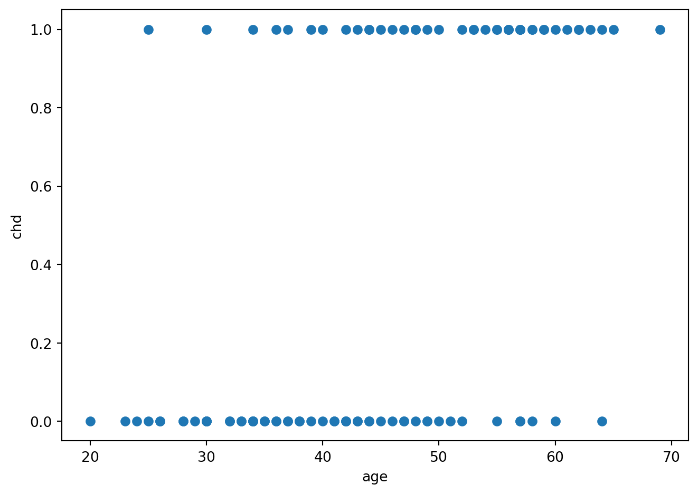

import matplotlib.pyplot as plt
import numpy as np
import pandas as pd
import statsmodels.formula.api as smf
import statsmodels.api as sm
import statsmodels.regression.linear_model as smlm
from patsy import dmatrix
from scipy.stats import norm, chi2
import sys
sys.path.append('../modules')
import choixglmstats12 Régression logistique
Présentation du modèle
artere = pd.read_csv('../donnees/artere.txt', header=0, index_col=0, sep=' ')fig = plt.figure()
plt.plot(artere.age, artere.chd, 'o')
plt.ylabel('chd')
plt.xlabel('age')
fig.tight_layout()
artere_summary = pd.crosstab(artere.agrp, artere.chd)
artere_summary.columns = ['chd0', 'chd1']
artere_summary['Effectifs'] = artere_summary.chd0 + artere_summary.chd1
artere_summary['Frequence'] = artere_summary.chd1 / artere_summary.Effectifs
artere_summary['age_min'] = [artere[artere.agrp == agrp].age.min() - 1 for agrp in artere_summary.index]
artere_summary['age_min'] = artere.groupby(["agrp"]).age.min() +1
artere_summary['age_max'] = [artere[artere.agrp == agrp].age.max() for agrp in artere_summary.index]
artere_summary['age_max'] = artere.groupby(["agrp"]).age.max()
artere_summary['age'] = [f']{artere_summary.age_min[i]};{artere_summary.age_max[i]}]' for i in artere_summary.index]
artere_summary['age'] = "]" + artere_summary.age_min.astype(str) + ";" + artere_summary.age_max.astype(str) + "]"
artere_summary.reset_index()[['age', 'Effectifs', 'chd0', 'chd1', 'Frequence']].to_string(index=False)
fig = plt.figure()
plt.plot(artere.age, artere.chd, 'o')
plt.ylabel('chd')
plt.xlabel('age')
plt.hlines(artere_summary.Frequence,artere_summary.age_min, artere_summary.age_max, 'k')
fig.tight_layout()modele = smf.glm('chd~age', data=artere, family=sm.families.Binomial()).fit()
print(modele.summary()) Generalized Linear Model Regression Results
==============================================================================
Dep. Variable: chd No. Observations: 100
Model: GLM Df Residuals: 98
Model Family: Binomial Df Model: 1
Link Function: Logit Scale: 1.0000
Method: IRLS Log-Likelihood: -53.677
Date: Tue, 04 Feb 2025 Deviance: 107.35
Time: 18:32:49 Pearson chi2: 102.
No. Iterations: 4 Pseudo R-squ. (CS): 0.2541
Covariance Type: nonrobust
==============================================================================
coef std err z P>|z| [0.025 0.975]
------------------------------------------------------------------------------
Intercept -5.3095 1.134 -4.683 0.000 -7.531 -3.088
age 0.1109 0.024 4.610 0.000 0.064 0.158
==============================================================================plt.plot(artere.age, artere.chd, 'o')
plt.ylabel('chd')
plt.xlabel('age')
plt.hlines(artere_summary.Frequence, artere_summary.age_min, artere_summary.age_max, 'k')
x = np.arange(artere_summary.age_min.min(), artere_summary.age_max.max(), step=0.01)
y = np.exp(modele.params.Intercept + modele.params.age * x) / (1.0 + np.exp(modele.params.Intercept + modele.params.age * x))
plt.plot(x, y, 'b--')
fig.tight_layout()X = np.random.choice(['A', 'B', 'C'], 100)
Y = np.zeros(X.shape, dtype=int)
Y[X=='A'] = np.random.binomial(1, 0.9, (X=='A').sum())
Y[X=='B'] = np.random.binomial(1, 0.1, (X=='B').sum())
Y[X=='C'] = np.random.binomial(1, 0.9, (X=='C').sum())
don = pd.DataFrame({'X': X, 'Y': Y})mod = smf.glm("Y~X", data=don, family=sm.families.Binomial()).fit()
print(mod.summary()) Generalized Linear Model Regression Results
==============================================================================
Dep. Variable: Y No. Observations: 100
Model: GLM Df Residuals: 97
Model Family: Binomial Df Model: 2
Link Function: Logit Scale: 1.0000
Method: IRLS Log-Likelihood: -13.869
Date: Tue, 04 Feb 2025 Deviance: 27.738
Time: 18:32:49 Pearson chi2: 32.0
No. Iterations: 23 Pseudo R-squ. (CS): 0.6689
Covariance Type: nonrobust
==============================================================================
coef std err z P>|z| [0.025 0.975]
------------------------------------------------------------------------------
Intercept 24.5661 2.57e+04 0.001 0.999 -5.03e+04 5.04e+04
X[T.B] -49.1321 3.27e+04 -0.002 0.999 -6.41e+04 6.4e+04
X[T.C] -22.8797 2.57e+04 -0.001 0.999 -5.04e+04 5.03e+04
==============================================================================mod1 = smf.glm("Y~C(X, Sum)", data=don, family=sm.families.Binomial()).fit()
print(mod1.summary()) Generalized Linear Model Regression Results
==============================================================================
Dep. Variable: Y No. Observations: 100
Model: GLM Df Residuals: 97
Model Family: Binomial Df Model: 2
Link Function: Logit Scale: 1.0000
Method: IRLS Log-Likelihood: -13.869
Date: Tue, 04 Feb 2025 Deviance: 27.738
Time: 18:32:49 Pearson chi2: 32.0
No. Iterations: 23 Pseudo R-squ. (CS): 0.6689
Covariance Type: nonrobust
==================================================================================
coef std err z P>|z| [0.025 0.975]
----------------------------------------------------------------------------------
Intercept 0.5621 1.09e+04 5.16e-05 1.000 -2.14e+04 2.14e+04
C(X, Sum)[S.A] 24.0039 1.84e+04 0.001 0.999 -3.61e+04 3.61e+04
C(X, Sum)[S.B] -25.1282 1.6e+04 -0.002 0.999 -3.13e+04 3.13e+04
==================================================================================Estimation
SAh = pd.read_csv("../donnees/SAh.csv", header=0, sep=",")
newSAh = SAh.iloc[[1,407,34],]
newSAh = newSAh.reset_index().drop("index",axis=1)
SAh = SAh.drop([1,407,34]).reset_index().drop("index",axis=1)form ="chd ~ " + "+".join(SAh.columns[ :-1 ])
mod = smf.glm(form, data=SAh, family=sm.families.Binomial()).fit()
mod.summary()| Dep. Variable: | chd | No. Observations: | 459 |
| Model: | GLM | Df Residuals: | 449 |
| Model Family: | Binomial | Df Model: | 9 |
| Link Function: | Logit | Scale: | 1.0000 |
| Method: | IRLS | Log-Likelihood: | -234.36 |
| Date: | Tue, 04 Feb 2025 | Deviance: | 468.72 |
| Time: | 18:32:49 | Pearson chi2: | 449. |
| No. Iterations: | 5 | Pseudo R-squ. (CS): | 0.2339 |
| Covariance Type: | nonrobust |
| coef | std err | z | P>|z| | [0.025 | 0.975] | |
| Intercept | -6.0837 | 1.314 | -4.629 | 0.000 | -8.659 | -3.508 |
| famhist[T.Present] | 0.9325 | 0.229 | 4.069 | 0.000 | 0.483 | 1.382 |
| sbp | 0.0065 | 0.006 | 1.127 | 0.260 | -0.005 | 0.018 |
| tobacco | 0.0814 | 0.027 | 3.023 | 0.003 | 0.029 | 0.134 |
| ldl | 0.1794 | 0.060 | 2.989 | 0.003 | 0.062 | 0.297 |
| adiposity | 0.0184 | 0.030 | 0.622 | 0.534 | -0.039 | 0.076 |
| typea | 0.0392 | 0.012 | 3.184 | 0.001 | 0.015 | 0.063 |
| obesity | -0.0637 | 0.045 | -1.430 | 0.153 | -0.151 | 0.024 |
| alcohol | 0.0002 | 0.004 | 0.035 | 0.972 | -0.009 | 0.009 |
| age | 0.0439 | 0.012 | 3.592 | 0.000 | 0.020 | 0.068 |
print(mod.conf_int(alpha=0.05)) 0 1
Intercept -8.659355 -3.507984
famhist[T.Present] 0.483354 1.381573
sbp -0.004798 0.017773
tobacco 0.028628 0.134174
ldl 0.061771 0.297043
adiposity -0.039461 0.076187
typea 0.015090 0.063396
obesity -0.151055 0.023612
alcohol -0.008640 0.008950
age 0.019931 0.067793don = pd.read_csv("../donnees/logit_donnees.csv", sep=",", header=0)
modsim = smf.logit("Y ~ X1 + X2 + X3", data=don).fit()Optimization terminated successfully.
Current function value: 0.366463
Iterations 7modsim.wald_test_terms()<class 'statsmodels.stats.contrast.WaldTestResults'>
chi2 P>chi2 df constraint
Intercept [[28.46981615119592]] 9.517067345514757e-08 1
X1 [[212.50601519640435]] 7.159869628652175e-47 2
X2 [[210.39004424749865]] 1.129196632385863e-47 1
X3 [[0.3095790886927727]] 0.5779385882309931 1modsim01 = smf.logit("Y~X2+X3",data=don).fit()
modsim02 = smf.logit("Y~X1+X3",data=don).fit()
modsim03 = smf.logit("Y~X1+X2",data=don).fit()Optimization terminated successfully.
Current function value: 0.554834
Iterations 6
Optimization terminated successfully.
Current function value: 0.575293
Iterations 5
Optimization terminated successfully.
Current function value: 0.366618
Iterations 7import statsmodels.regression.linear_model as smlm
smlm.RegressionResults.compare_lr_test(modsim,modsim01)(376.7417147005359, 1.554447652669738e-82, 2.0)smlm.RegressionResults.compare_lr_test(modsim,modsim02)(417.66072160440774, 7.881723945480014e-93, 1.0)smlm.RegressionResults.compare_lr_test(modsim,modsim03)(0.3097619772612461, 0.5778262823265808, 1.0)print(newSAh) sbp tobacco ldl adiposity famhist typea obesity alcohol age chd
0 144 0.01 4.41 28.61 Absent 55 28.87 2.06 63 1
1 200 19.20 4.43 40.60 Present 55 32.04 36.00 60 1
2 148 5.50 7.10 25.31 Absent 56 29.84 3.60 48 0print(mod.predict(newSAh))0 0.320889
1 0.881177
2 0.369329
dtype: float64varbetac = mod.cov_params().values
betac = mod.params.values
ff = mod.model.formula.split("~")[1]
xetoile = dmatrix("~"+ff, data=newSAh, return_type="dataframe").to_numpy()
prev_fit = np.dot(xetoile,betac)
prev_se = np.diag(np.dot(np.dot(xetoile,varbetac), np.transpose(xetoile)))**0.5
cl_inf = prev_fit-norm.ppf(0.975)*prev_se
cl_sup = prev_fit+norm.ppf(0.975)*prev_se
binf = np.exp(cl_inf)/(1+np.exp(cl_inf))
bsup = np.exp(cl_sup)/(1+np.exp(cl_sup))
print(pd.DataFrame({"binf": binf, "bsup": bsup})) binf bsup
0 0.199717 0.472200
1 0.713881 0.956601
2 0.246181 0.512220g = artere.groupby(["age"])
dfsat = pd.concat([g["chd"].mean(), g["chd"].count()], axis=1)
dfsat.columns = ["p", "n"]
print(dfsat.iloc[0:5]) p n
age
20 0.0 1
23 0.0 1
24 0.0 1
25 0.5 2
26 0.0 2plt.plot(artere.age, artere.chd, 'o', dfsat.index, dfsat.p, "-")
plt.ylabel('chd')
plt.xlabel('age')
fig.tight_layout()K=10
ajust = pd.DataFrame({"ajust": mod.predict()}, index=SAh.index)
ajust["Y"] = SAh["chd"]
ajust['decile'] = pd.qcut(ajust["ajust"], K)
ok = ajust['Y'].groupby(ajust.decile).sum()
muk = ajust["ajust"].groupby(ajust.decile).mean()
mk = ajust['Y'].groupby(ajust.decile).count()
C2 = ((ok - mk*muk)**2/(mk*muk*(1-muk))).sum()print('chi-square: {:.3f}'.format(C2))chi-square: 6.659pvalue=1-chi2.cdf(C2, K-2)
print('p-value: {:.3f}'.format(pvalue))p-value: 0.574form ="chd ~ " + "+".join(SAh.columns[ :-1 ])
mod = smf.glm(form, data=SAh, family=sm.families.Binomial()).fit()resdev = mod.resid_deviance/np.sqrt(1-mod.get_hat_matrix_diag())
respea = mod.resid_pearson/np.sqrt(1-mod.get_hat_matrix_diag())fig = plt.figure()
plt.plot(resdev, 'o')
plt.ylabel('residus deviance')
fig.tight_layout()fig = plt.figure()
plt.plot(respea, 'o')
plt.ylabel('residus Pearson')
fig.tight_layout()Choix de variables
mod0 = smf.glm("chd~sbp+ldl", data=SAh, family=sm.families.Binomial()).fit()
mod1 = smf.glm("chd~sbp+ldl+famhist+alcohol", data=SAh, family=sm.families.Binomial()).fit()
def lr_test(restr, full):
from scipy import stats
lr_df = (restr.df_resid - full.df_resid)
lr_stat = -2*(restr.llf - full.llf)
lr_pvalue = stats.chi2.sf(lr_stat, df=lr_df)
return {"lr": lr_stat, "pvalue": lr_pvalue, "df": lr_df}
lr_test(mod0, mod1){'lr': 25.5447172394405, 'pvalue': 2.838148600168801e-06, 'df': 2}mod_sel = choixglmstats.bestglm(SAh, upper=form)print(mod_sel.sort_values(by=["BIC","nb_var"]).iloc[:5,[1,3]]) var_added BIC
176 (tobacco, famhist, ldl, typea, age) 509.100392
287 (tobacco, famhist, typea, age) 512.495444
284 (tobacco, famhist, ldl, age) 512.537897
91 (tobacco, famhist, ldl, typea, obesity, age) 513.424654
358 (famhist, ldl, typea, age) 513.471151print(mod_sel.sort_values(by=["AIC","nb_var"]).iloc[:5,[1,2]]) var_added AIC
176 (tobacco, famhist, ldl, typea, age) 484.326091
91 (tobacco, famhist, ldl, typea, obesity, age) 484.521302
36 (tobacco, famhist, ldl, typea, obesity, age, sbp) 485.117363
93 (tobacco, famhist, ldl, typea, age, sbp) 485.311962
31 (tobacco, famhist, adiposity, ldl, typea, obes... 486.031360